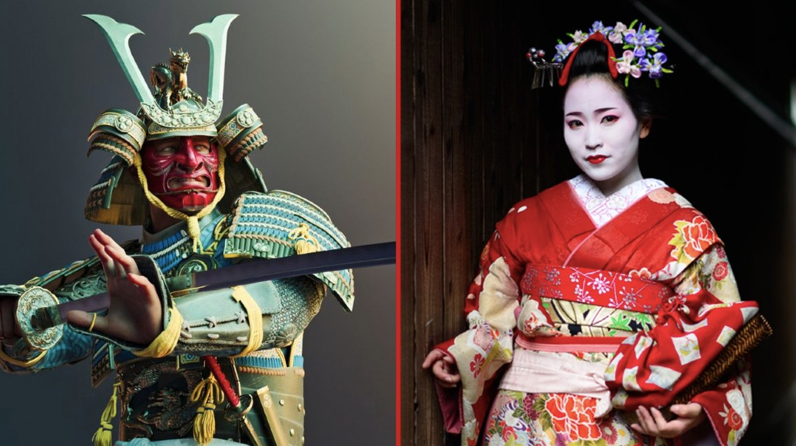

Littéralement, le mot samouraï signifie « celui qui sert ». C’est donc un guerrier japonais au service d’un seigneur local, le daimyō, pendant la période féodale. A l’ère Heian, il s’agissait la plupart du temps, de paysans et d’artisans qui, en cas de guerre, combattaient sous les ordres des seigneurs auxquels ils étaient rattachés, en échange de riz . Pas très alléchant comme contrepartie ! Par ailleurs, on mesurait leur richesse à la quantité de riz (koku) qu’ils possédaient. Au fur et à mesure, le samouraï rejoint la cour impériale pour recevoir un entraînement intensif de guerrier et devenir un combattant hors pair. Saviez-vous qu’il existe plusieurs appellations pour distinguer les différents samouraïs ? Le rōnin, très mal considéré étaient un guerrier sans maître qui n’appartenait à aucun clan. Le hatamoto quant à lui, était un vassal du shogun, général de guerre à la tête du pays.
Le concept de muse artistique est apparu pour la première fois en 794 sous le règne de l’empereur Kamu qui convia des danseuses pour distraire les samouraïs et guerriers. C’est cette association d’art et de divertissement qui donna naissance, plus tard aux geishas que l’on connaît aujourd’hui. La tendance se développa à l’ère Edo dans l’ancienne capitale du Japon. Petit à petit, les danseuses cultivèrent d’autres talents comme le chant, la poésie, la musique classique et l’art de la conversation. Elles étaient souvent invitées aux banquets (ozashiki) en tant que dames de compagnie pour servir le saké et divertir la noble clientèle Saviez-vous que les premières geisha officielles étaient des hommes ? De nombreuses femmes appelées onna geisha, ont ensuite rejoint le métier jusqu’à devenir majoritaires. Ce n’est qu’à partir de 1800, que la profession devient exclusivement féminine. Au cours des années, le métier de geisha fut officiellement reconnu et s’en suivit un code de conduite très strict. La croissance de la profession est associée à l’émergence des maisons de thé.